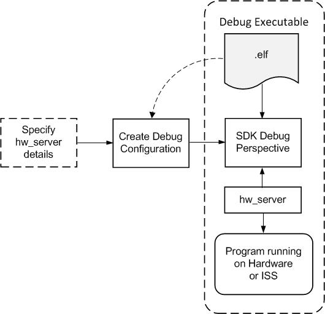

The SDK debugger enables you to see what is happening to a program while it executes. You can set breakpoints or watchpoints to stop the processor, step through program execution, view the program variables and stack, and view the contents of the memory in the system.
The SDK debugger supports debugging through Xilinx System Debugger and GNU Debugger (GDB).
Note: The GDB flow is deprecated and will not be available for future devices.
Xilinx® System Debugger uses the Xilinx hw_server as the underlying debug engine. SDK translates each user interface action into a sequence of TCF commands. It then processes the output from system Debugger to display the current state of the program being debugged. It communicates to the processor on the hardware using Xilinx hw_server.
The debug workflow is described in the following diagram:

The workflow is made up of the following components:
You can repeat the cycle of modifying the code, building the executable, and debugging the program in SDK.
Note: If you edit the source after compiling, the line numbering will be out of step because the debug information is tied directly to the source. Similarly, debugging optimized binaries can also cause unexpected jumps in the execution trace.
SDK supports debugging of a program on processor running on an FPGA or a Zynq-7000 AP Soc device. All processor architectures (MicroBlaze™ and ARM Cortex A9 processors) are supported. SDK communicates to the processor on the FPGA or Zynq-7000 AP SoC device.
Before you debug the processor on the FPGA, you should configure the FPGA with the appropriate system bitstream. Refer to Xilinx Embedded Hardware for more information.
The debug logic for each processor enables program debugging by controlling the processor execution. The debug logic on soft MicroBlaze processor cores is configurable and can be enabled or disabled by the hardware designer when building the embedded hardware.Enabling the debug logic on MicroBlaze processors provides advanced debugging capabilities such as hardware breakpoints, read/write memory watchpoints, safe-mode debugging, and more visibility into MicroBlaze processors. This is the recommended method of debugging MicroBlaze software.